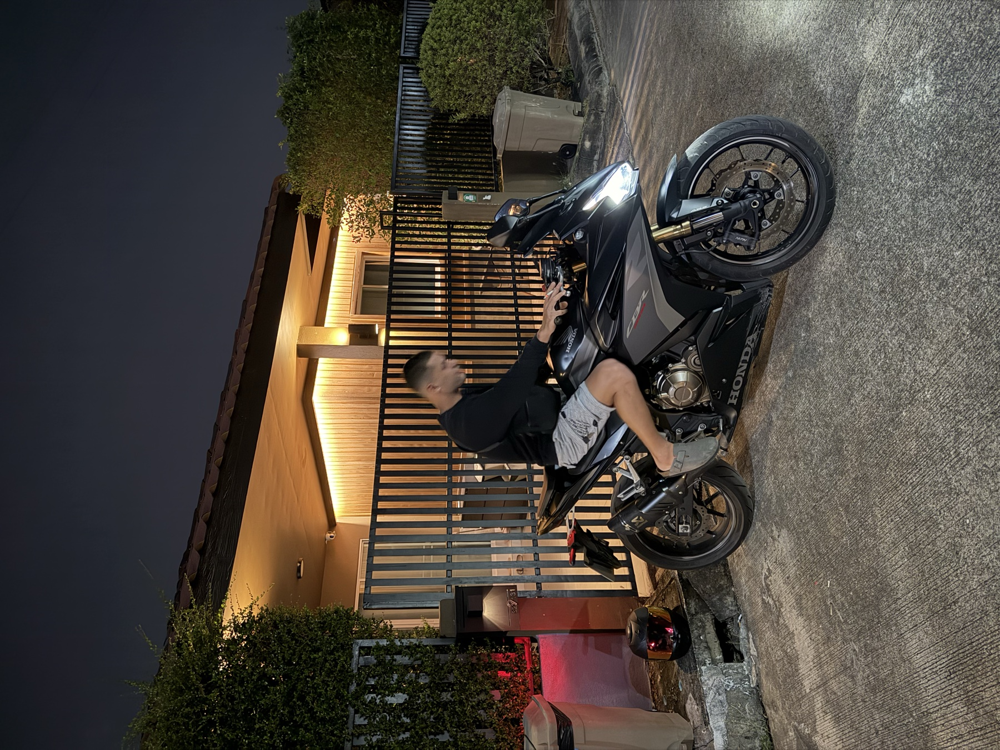

MY STORY · HUNCHO
Building a life with more choice.
Huncho · Mentor, Market Movers

Before I found trading, I was working and exploring different paths, from trades to university, trying to figure out what I wanted to build for myself. I wanted more choice over my time, where I could live, and how I could earn a living. That search eventually led me to the markets.
I started learning to trade in 2023. What began as an interest became something I wanted to take seriously. Trading offered the possibility of developing a skill I could carry with me anywhere, and I was willing to put the time into learning it.
Learning through the difficult stages.
That development continued throughout 2024, which was a challenging period. I was still learning, struggling to bring everything together, and working out how to approach the markets with more structure. Progress took perseverance. That year became an important part of my journey because it pushed me to keep developing my understanding and become more deliberate about my approach.
How I trade today.
My trading today centres on Bitcoin, using supply and demand alongside market structure. I focus on understanding where price is trading, identifying the areas that matter, and waiting for a setup to develop. Having a clear framework gives purpose to my analysis and helps guide my decisions when trading a live account.
Alongside active trading, I have also built a spot portfolio. These are two distinct parts of my involvement in the markets: trading live accounts and holding assets as investments. Today, my spot portfolio is worth over $70,000, and I have generated $50,000 in trading earnings. Those figures represent meaningful milestones in a journey that began with learning the fundamentals in 2023.
Building more freedom.
Trading has now become part of my lifestyle. It supports my ability to travel and gives me greater flexibility in how I spend my time. Having that freedom was one of the reasons I started, and it continues to shape what I want to build.
My decision to pursue trading came from wanting more out of life and being prepared to work towards it. I explored different paths before finding something I wanted to commit to, and I continued through the difficult stages of learning.
Why I built this mentorship.
I helped build Market Movers to show others what is possible and give them support as they work towards their own goals. I believe the right guidance, practical assistance, and clear feedback can significantly accelerate your progress, helping you understand your mistakes, focus your learning, and make better-informed decisions.
That support extends across the technical, financial, psychological, and emotional sides of trading. Understanding a chart is one part of the process; managing fear, handling losses, staying patient, and recognising when emotions are influencing your decisions all deserve attention. Knowing your plan and being able to follow it under pressure are skills that need to develop together.
That is why I wanted to create this mentorship: to help others build their market knowledge, confidence, discipline, and self-awareness. I bring my experience of learning, persevering, trading live accounts, and building a spot portfolio, with the aim of helping people approach their own journey with greater clarity and direction.